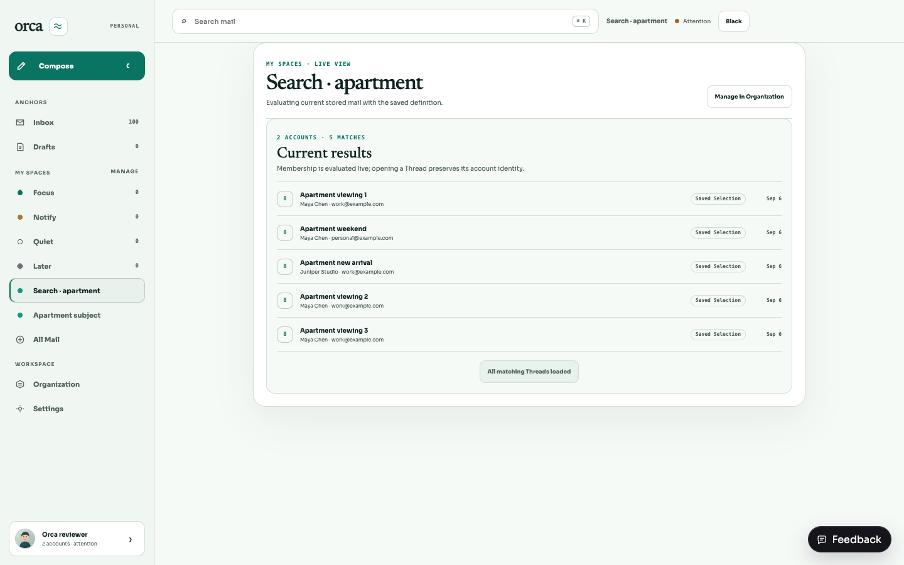

Orca · M9 · BRE-384 · Reviewer evidence · 6 September 2026
A useful search becomes a living perspective.
Save as View opens the existing reviewed draft → matching-mail preview → explicit commit flow. Account and evidence translate exactly. General text, mailbox behavior and collection membership remain visible blockers until the user explicitly changes the meaning.
No AI runtime, syntax parser, result-ID persistence or new Pin is involved.
Try it with real stored mail
This command starts the production Hono routes and React app against a new disposable SQLite database. The messages and accounts are synthetic; the save, authorization, preview, result evaluation and reload are real. It never opens your mailbox database.
bun install --frozen-lockfile
bun scripts/bre-384-review.ts
Open the local reviewer session. API uses port 3084 and Vite uses 5184. Stop with Ctrl-C. Each launch creates a fresh database; its printed path remains available for inspection after stopping. The synthetic accounts have no provider credentials, so provider refresh can report missing-credential warnings; Search and View evaluation use the seeded SQLite mail.
- Search apartment. The initial source has six message matches: four subject matches and two matches found only in snippets.
- Choose Save as View. The general text clause is preserved and Save stays disabled. Nothing is persisted by entering review.
- Choose Replace with subject contains “apartment”. This is an explicit change of meaning. Focus moves to Subject contains; the four matching conversations are previewed.
- Edit the View name. Tune can add readable account, sender, unread, date and other existing predicates. Undo draft change restores the previous definition; undoing the replacement restores the blocker.
- Choose Save View. The canonical destination is
/?destination=view%3A<id>; the saved title receives focus and the View appears in My spaces. Reload the page and verify the same four conversations. - Insert a later message, then reload the View:
curl -X POST http://127.0.0.1:5184/v1/review/future
The fifth conversation, Apartment new arrival, matches automatically. The source Search now has seven messages. Browser Back restores its query, source URL, loaded depth, scroll and focused result (or Save as View).
An exact path with no replacement
- Open Search, clear the words, open Filters and choose Evidence → Likely human. Optionally restrict Account to work.
- Save as View. The effective evidence and explicit account become the complete live definition. There is no unsupported clause on this path.
- Preview and save. Future matching mail is evaluated against the definition. Every connected account means dynamic workspace scope; a specific account stays fixed.
Mailbox defaults to All mail. Inbox, Focus, Quiet and Hidden are unsupported restrictions, even when their current results happen to equal an Organization Lane.
Translation contract
| Search state | View translation | Meaning / proof |
|---|
| Account = explicit ID | accountIds: [id] | Same authorized account; foreign/revoked scope fails. |
| Account omitted | Omit accountIds | Current and later connected authorized accounts. |
| Likely human | humanSignal.classifications: [likely_human] | Effective message → sender address → sender domain override → stored classification. |
| Automated or bulk | [automated_or_bulk] | Identical effective classification. |
| Needs review | [uncertain, unclassified] | Includes null stored classification through the same fallback. |
| Any evidence / All mail / no collection / blank words | Omit corresponding predicate | Only genuine no-op states omitted. Entirely blank definition cannot save. |
| General words, including apparent syntax | Typed search.query blocker | Production matches sender name/address, subject and snippet. No body-only or conversational parser. Explicit subject-only replacement is offered. |
| Inbox / Focus / Quiet / Hidden | Typed search.mailbox blocker | Current attention behavior is not equivalent to Lane membership. |
| Collection / Space ID | Typed search.collection blocker | No equivalent live collection predicate. Current member IDs never substituted. |
| Sender, unread and date | Readable existing Tune controls | No hidden source clauses invented. Sender addresses are exact; dates visibly use UTC day boundaries. |
Search presents messages while Views present conversations. Equivalence tests compare distinct accountId/threadId membership across every page; they do not assert equal display counts or order. One matching message includes its conversation even if another message has different evidence.
Recovery and keyboard checks
To reproduce a recoverable server error in the scratch environment, edit a draft name or filter, then arm the next commit failure:
curl -X POST http://127.0.0.1:5184/v1/review/fail-next-commit
Click Save View, then Retry connection. The edited name and filters must remain. Preview must become current before Save is enabled again. This fault is injected by the reviewer harness; it is not a production endpoint.
- Typing immediately disables saving and invalidates old results; a 300ms debounce starts the new query. Old search/prepare/preview generations cannot replace current state.
- Untouched Cancel returns directly. After draft changes, Cancel asks to discard; Keep editing receives focus. Discard returns to the preserved Search and Save as View focus.
- Escape closes nested filter menu, Tune, zero confirmation and then draft review. Tab remains in the active dialog. Cmd/Ctrl+Enter submits; Cmd/Ctrl+Z outside editable fields undoes a draft filter change.
- Use subject
no-such-apartment for zero results. The first save action only opens zero-match confirmation; changing the definition invalidates it. Cancel zero-match confirmation preserves the draft. - Prepare failure offers Retry preparation. Preview failure offers Retry preview. Failed commit preserves the draft and the established retry key. Retry connection rechecks the edited draft without reloading its original seed. Saving disables mutation and duplicate commit.
Automated interaction tests cover failures, stale preparation, same-key commit retry, debounced search, return anchors and scroll. Real browser evidence covers pointer replacement/save, reload/future matches, Back focus, zero confirmation, Escape/discard and Undo. The additional live 503 proof was attempted after the recovery fix, but the browser daemon returned Resource temporarily unavailable (os error 35) after five retries. Both pending commands and the scratch server were stopped, and the named browser closed successfully. The final recovery change is covered by interaction tests, not a new browser screenshot; the independent verifier can repeat the one-shot failure command above. No browser traversal of every advanced Tune control or human usability study is claimed.
Visual evidence

Real durable View after reload: five conversations, including mail added after saving.Axe 4.12.1, WCAG 2 A/AA: zero violations across all four theme/size checks. Both 1024px runs have zero incomplete checks. Each 1440px run has one incomplete contrast calculation for the same blocker explanation, reported as a partial-overlap background heuristic. Manual computed colors are #51645e on #fff (6.30:1) and #b1b1ab on #0d0d0d (9.02:1), above 4.5:1; screenshots were visually inspected. The raw reports remain alongside this guide.
Implementation and test evidence
The shared prepareMailSearchView adapter feeds BRE-381 preparation through BRE-383 OrganizationViewAuthoringEntry<TContext> / OrganizationViewAuthoringWorkspace. Search owns its opaque return snapshot. The common workspace adds optional explicit clause replacements, compact Tune and nested dismissal; no parallel builder exists.
Real mailbox / View comparison found a pre-existing override normalization difference: selected-sender work had expanded whitespace trimming in the evaluator. Classification matching now uses exactly the mailbox's SQLite space-trim semantics; sender-selection and allowlist normalization retain their existing contracts. The regression fixture includes ordinary spaces, tabs and nonbreaking spaces.
Focused checks: 7 shared/API tests, 76 assertions (before a timestamp-only fixture clarification); 54 web tests, 432 assertions. Coverage includes multi-page composite membership, override precedence/removal, null classification, future mail/account connection, account revocation/isolation, unsupported/blank/zero drafts, and full prepare/preview database immutability.
Scratch database inspection records the two explicit browser saves as revision-1 subject predicates and zero Pins. Zero-match review and Cancel created no additional View.
Final workspace typechecks passed (API/shared serial run, then corrected web-only rerun). Diff check passed. Local default full tests were executed and failed during severe host contention (load roughly 32–39), including timing failures and follow-on runner errors. The serial API run reached 533 pass / 1 fail / 1 error; its one View REST case passed in isolation with its unchanged timeout. A subsequent fresh-process sweep was stopped after another untouched MCP case exceeded its own 60-second limit. Build and lint were deferred under the coordinator’s resource limit; their compiler steps duplicate the successful typechecks. Hosted GitHub CI must supply a clean full typecheck and test gate before this change is treated as verified. See the PR checks and the accompanying verification-runs.json for the exact distinction.
bun run typecheck
bun run test
bun run build
bun run lint
git diff --check
Stack base: 785a74865454f730a996d086dba50def09b37875 on bre-383-selected-senders. No schema migration. No merge performed.
Independent review corrections
Review of the first frozen head 6e69f75 reproduced two lifecycle defects. Changing Mailbox, Evidence, Account or Space before the 300 ms debounce now commits the current input together with the scope change. Late debounce and fetch responses cannot restore the old query; preparation and Cancel retain the resulting exact Search URL.
Leaving authoring now invalidates pending mutation callbacks. A server may still finish an accepted save, but that response cannot navigate away from a newer Search or overwrite its return snapshot. Regression checks cover direct unmount, new Search and browser-history departure; existing entry-replacement and retry-envelope checks remain applicable. This correction adds no visual state, and the earlier theme screenshots remain evidence of those unchanged states.
Manual regression: open Search for alpha, type beta and immediately change each scope control. Beta should remain in the field and URL. During a delayed save, leave via browser history or open another Search; its location must remain after the old save finishes. These two corrections have automated coverage; no new live browser run is claimed.